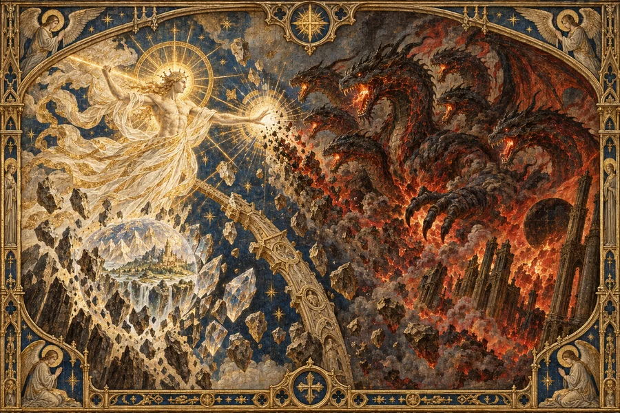

Vor aller bekannten Zeit
Anu, Tathamet und die geteilte Schöpfung
Am Anfang existierte Anu, ein vollkommenes Wesen, das Licht und Dunkelheit, Ordnung und Chaos in sich vereinte. Um vollkommene Reinheit zu erreichen, stieß Anu alles Böse aus sich heraus. Doch die abgestoßenen Aspekte verschwanden nicht: Sie vereinigten sich zum siebenköpfigen Drachen Tathamet, der Verkörperung allen Übels.
Anu und Tathamet bekämpften einander über unvorstellbare Zeitalter, bis beide im letzten Zusammenstoß vernichtet wurden. Aus ihren Überresten entstand die bekannte Schöpfung.
Anus Wirbelsäule wurde zum Kristallbogen, um den sich die Hohen Himmel formten. Sein Auge blieb als Weltenstein zurück – ein Artefakt von gewaltiger Macht, das ganze Welten formen konnte. Tathamets Körper wurde zum Fundament der Brennenden Höllen, während aus seinen sieben Köpfen die sieben großen Dämonenfürsten hervorgingen: die drei Großen Übel und die vier Geringen Übel.
Damit endete der Kampf zwischen Licht und Finsternis nicht. Er wurde zum Fundament der neuen Schöpfung.